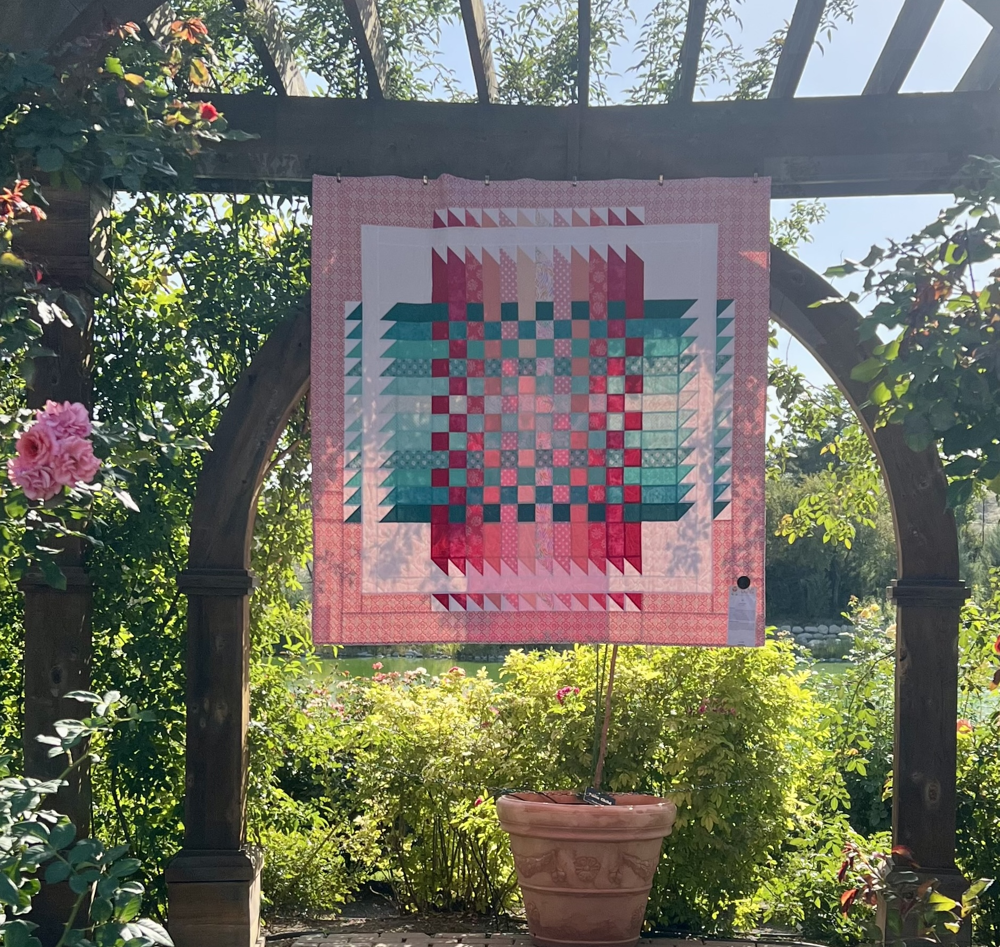

Yoshie takes great pride in being able to display her masterpieces in local exhibits. It allows her to share the story of each quilt, and gives others the opportunity to see them.
Mother & Daughter's Colors on the Canvas 2021
Springville Museum Annual Quilt Show 2024
